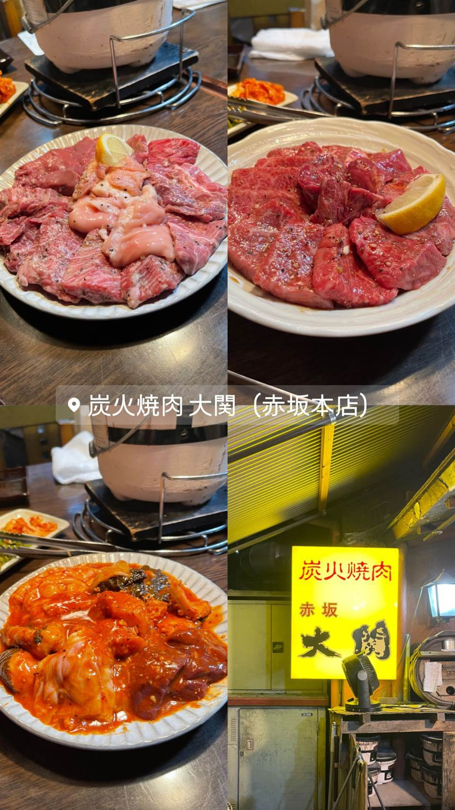

★ また行きたい焼肉で11位
炭火焼肉赤坂大関
厚切り肉の草分け、A5和牛を味わう「牛一匹」コース
炭火焼肉 大関（赤坂本店）
WHY GO
赤坂の路地裏にある古民家を改装した一軒家焼肉店。厚切り肉の草分け的存在として知られ、2005年に叔父から店を引き継いで現体制に。A5和牛を堪能できる「牛一匹」コースが人気。
TRIVIA
豆知識
- 厚切り肉の草分け的存在としてメディアによく登場する
- 2016年に横浜・関内へ出店し精肉・惣菜販売も開始
REVIEWS
世間の評判
3.67食べログ
A5和牛の厚切りとコスパ
- 厚切りのA5和牛をボリュームたっぷりと食べられるという声が多い
- 高級なA5和牛を手頃な価格で楽しめるとコスパを評価する声が多い
- 現金払いのみで隠れ家的なため入口が少し分かりにくいという声がある
食べログ 口コミ926件
| 創業 | 前身「焼肉小結」が2002年6月に赤坂で開業、2005年12月に有限会社ドラゴンキング設立 |
|---|---|
| 系譜 | 叔父から店を引き継いで独立し現体制に |
| 看板 | 厚切り肉、A5和牛を堪能する「牛一匹」コース |
| こだわり | 厚切り肉の草分け的存在とされ、古民家を改装した一軒家で炭火焼き |
| 掲載・評価 | テレビ・雑誌等メディアにたびたび取り上げられている |
| どこから | 都心 |
| 営業時間 | 月〜土 17:00-23:00 日 15:00-21:00 |
| 予算 | 夜 ¥6,000～¥7,999 |
| 場所 | 赤坂 東京都港区赤坂 |
| メモ | 赤坂の路地裏にある一軒家、昭和の雰囲気が残る古民家を改装した店舗 |
食べたもの：焼肉盛り合わせ
ONSEN & SAUNA